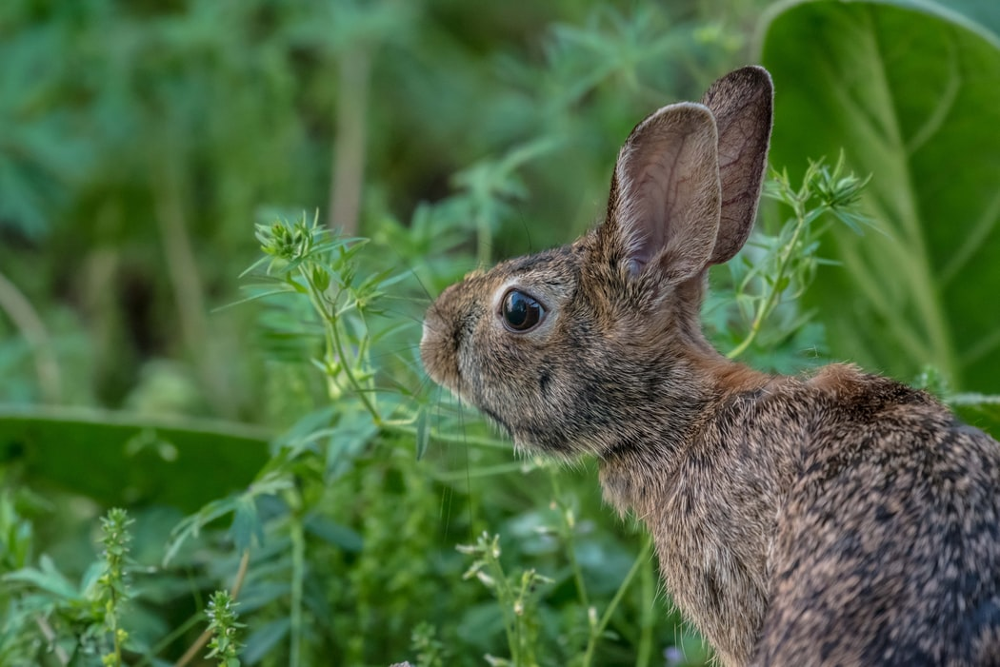
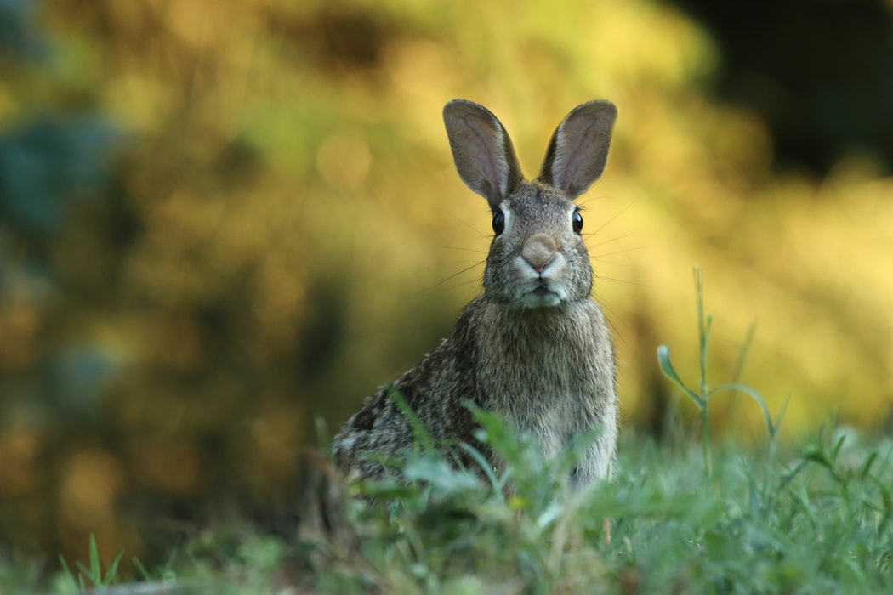

Amami Rabbit As Specie
The Amami rabbit is a type of rabbit found on the two Japanese
islands of Amani Oshima and Toku-no-Shima. It is the last
surviving population of the Asian mainland's rabbits. It has short
feet and hind legs, which allows it to hop quickly. It is fat, and
its coat is coarse and dark brown. On the forefeet, the claws are
sharp and nearly perpendicular; while on the hind feet, they are
concave. In the diet of the Amami rabbit, which includes a large
number of plants from various plant groups, there are shrubs and
herbaceous plants, and other types of plants as well.


Amami Rabbit Habitat
Coastal and inland waterways provide eagles with their main food
sources. The Steller's sea eagle's breeding grounds are known for
their abundance of salmon. These eagles mainly subsist on this
resource, and they are both hunters and scavengers. Because of the
annual salmon runs, enormous populations of these fish are
available, and this allows for Steller's sea eagle nests to be
typically located near coasts and rivers, where these fish
congregate.